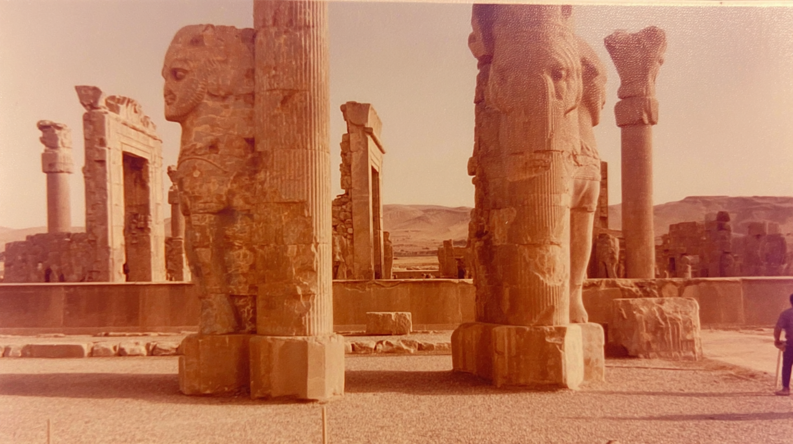
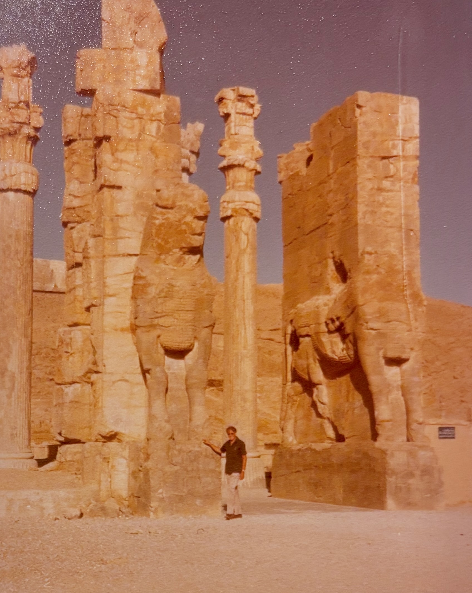
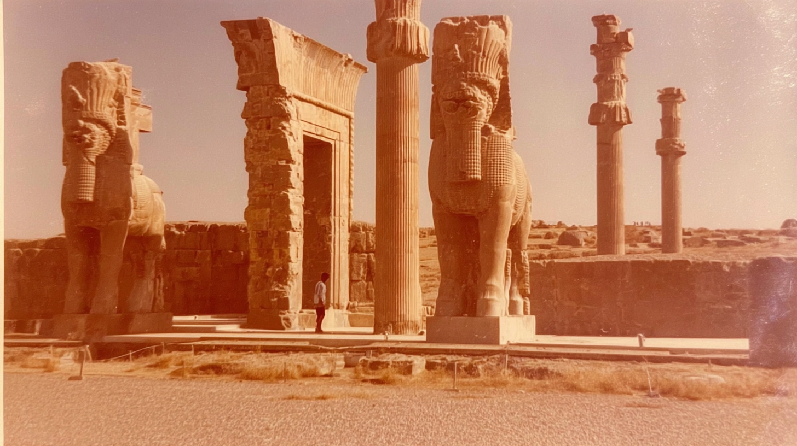
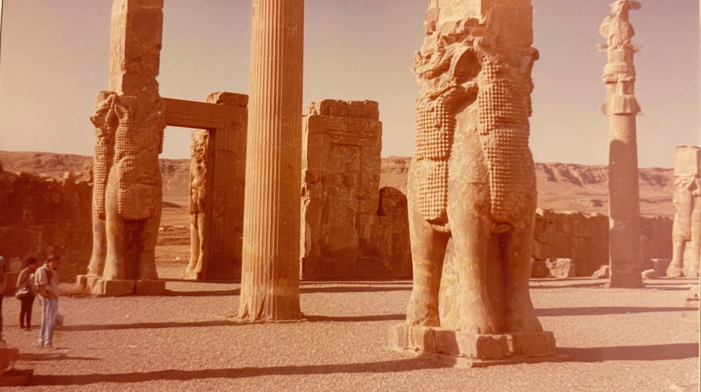
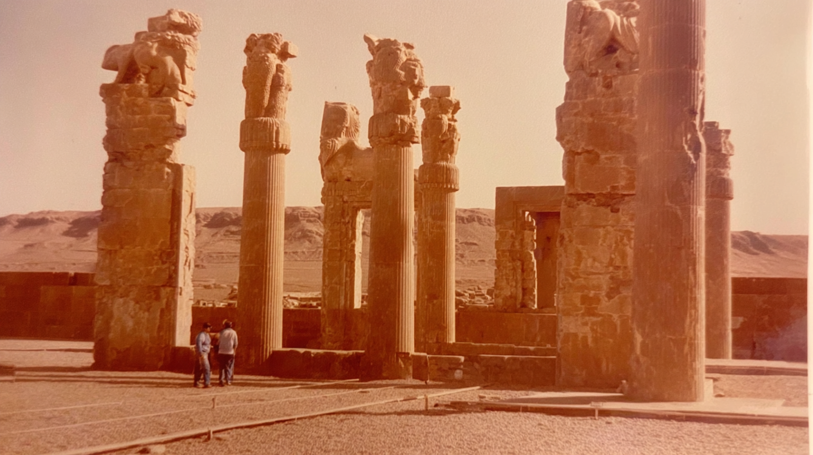

Two colossal stone guardian figures stand back to back among tall columns, their weathered forms glowing in warm desert light with distant mountains fading into the haze behind them.
A monumental winged bull statue faces forward between towering pillars, framing a lone visitor who appears small beneath the immense scale of the ancient gateway.
Massive carved guardians rise from thick stone bases inside an open courtyard, while a few visitors linger at the edge of the frame, dwarfed by the towering columns.
A wide view of the ruins reveals multiple guardian statues aligned among tall pillars, their sunlit surfaces casting long shadows across the gravel as two people stand quietly beneath them.
mid ground shot of 70's analogue photograph of Persepolis columns. sun-bleached colours, subtle dusty pink and muted ochre tones, soft film grain, heat shimmer distortion, textured details, imperfect composition, 35mm kodachrome, muted natural colours, low contrast grading, soft highlights, hazy atmosphere, arid heat.. Light film grain, dimpled texture, organic texture, low digital sharpness, no vivid colours. Shot like contemporary cinema, realistic, alive, subtle faded blurry shutter motion